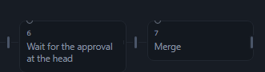
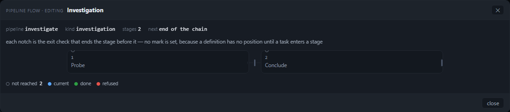
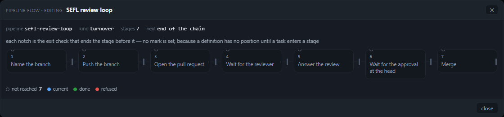
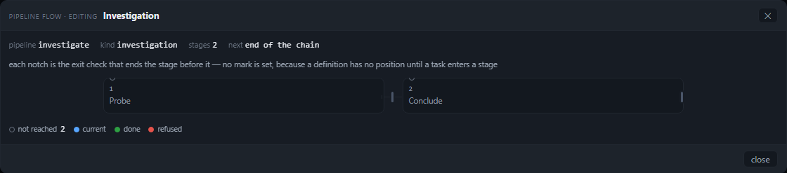
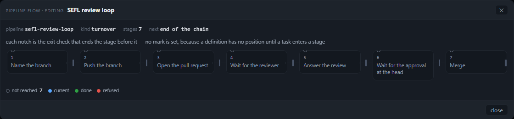
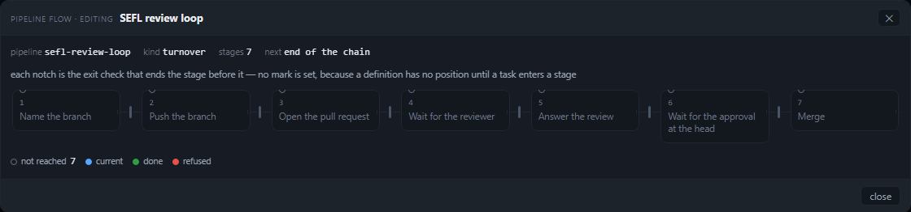
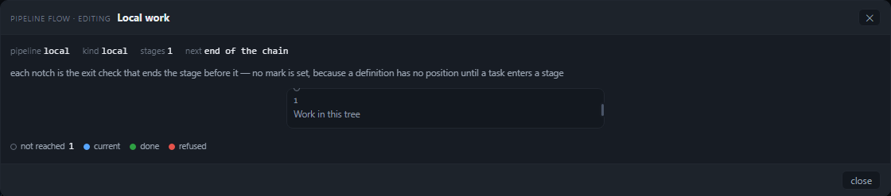
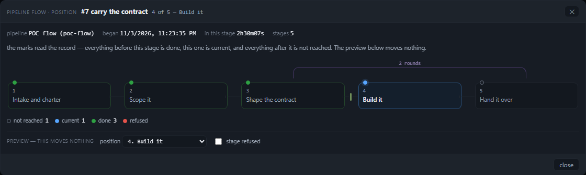
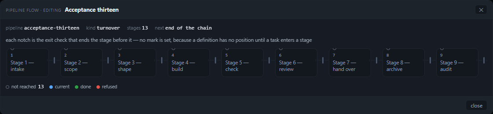

The drawing now fills its card, its words clear AA, and nothing hangs past the track
Round 5A measured six findings. Stage 3 fixed the arc geometry (its finding 6) in the truth layer; this round takes
the three the brief names — the 18 px stub past the track, the dead band at one to three stages, and the titles at
3.77:1 — plus the backdrop press that closed two surfaces, and re-runs the same harness with --strict.
134/140 judge lines and 129/129 contract checks. Round 5A read 94/126 and 129/129 on
the same harness. The three findings are closed, each with the number that decided it: a two-stage definition is an
826 px track with 146 px either side where it was 506 px with 598 px empty on the right; the
seven-stage drawing is 1094 px of content in a 1094 px scroller with all seven notches inside, where
it was 1109 against 1094 and the last notch was clipped away; and every stage title clears AA at
5.94:1 where it was 3.77:1. The six lines still red are round 5A's finding 2 — thirteen stages,
four columns and their notches out of view, 468 px hidden, no count and no fit control —
which the architecture review's acceptance gives to the plan's C8 phase and which this row did not take.
1. The two verdicts, separately
| question | route A — queue row, position mode | route B — Settings > Pipeline, edit mode |
|---|---|---|
| Is everything visible at 1280 and at 1821? every stage, gate notch, loop arc, legend mark, position token; no clipping, no overflow, nothing painting under another |
PASS. 5 of 5 stages, 1 notch, 1 arc, 4 legend marks, the position token and the
4 of 5 — Build it subtitle are inside the scroller and the card; scrollWidth 1094 =
clientWidth 1094; the arc is on the stage centres it joins; the arcs layer is the track's own box
(V1–V7). |
PASS at 1, 2, 3 and 7 stages — every stage and every notch inside the scroller, no overflow. Still FAIL at 13 (finding 2, below): 4 stages and 4 notches out, 468 px hidden. |
| Does it look clean and crisp? spacing, alignment, contrast, no dead space, visible focus ring |
PASS. Titles 5.94:1, no dead band (1090 px track in a 1118 px body), the loop arc
S4→S2 on centre, the focus ring visible (auto/1px). |
PASS at 1, 2, 3 and 7 stages. 1 stage: a 400 px column centred (359 px either side) where it was a 240 px card with 864 px empty; 2: 826 px centred (146/146) where it was 506 px with 598 px empty; 3 and 7 fill the card (1090 px, 14 px either side); every title 5.94:1; the closing gate's notch is on the track's edge, inside the scroller. The backdrop press no longer closes Settings (finding 5). |
2. How it was measured
tools/verify-pipeline-flow-visible.mjs is round 5A's harness, extended rather than replaced. It boots a
throwaway panel of this checkout — its own PANEL_CONFIG, jobs store, pipelines.json, an
ephemeral port, a dead apiServer, the board assistant off — and drives it with Chromium. Route B is
Settings > Pipeline > a definition > open the flow; route A is a queue row's ⇢ press. Every value is
read from the DOM in the page: getBoundingClientRect against the scroller's client box and the track's own
box, scrollWidth/clientWidth, pairwise intersections, the arc's ends against the stage
centres it joins, the painted colours as a contrast ratio, the computed outline of whatever the keyboard focused.
Three judge lines are new or re-stated, because the width policy moved the meaning of two of them:
- C1 now measures the policy itself: the capped track is centred (the space beside it matches within 8 px) and uses the card up to its ceiling — at least 70% of the body from two stages up, and for a one-stage definition a 400 px column. The architecture review's line was "no dead band wider than 80 px beside the track at two stages", written about a left-aligned track; the plan (C5) amends it to a symmetric margin, because a centred 826 px track in a 1094 px scroller leaves 133 px each side and that is a margin, not a band. The line says so in its label.
- C8 (new) is finding 1's direct measurement: nothing — no stage, no notch, no arc — is painted past the track's own right edge. It is measured while the drawing fits; a long definition's columns legitimately run past the visible box and V1–V3 judge that case.
- V7 (new) is the premise the arcs rest on: the arcs layer is the track's box
(
arcs 95+1090 vs track 95+1090), in both the capped and the filling regime. Two independently capped boxes is how a loop lands over the wrong stage.
The cases, before and after (identical at 1280×800 and 1821×700)
| case | stages | track / body | dead space L / R | column | scrollWidth / clientWidth | worst title |
|---|---|---|---|---|---|---|
route B · local | 1 | before 240 / 1118 → 400 / 1118 | 864 right → 359 / 359 | 240 → 400 | 1094 / 1094 (both) | 3.77:1 → 5.94:1 |
route B · investigate | 2 | 506 / 1118 → 826 / 1118 | 598 right → 146 / 146 | 240 → 400 | 1094 / 1094 (both) | 3.77:1 → 5.94:1 |
route B · turnover | 3 | 772 / 1118 → 1090 / 1118 | 332 right → 14 / 14 | 240 → 346 | 1094 / 1094 (both) | 3.77:1 → 5.94:1 |
route B · sefl-review-loop | 7 | 1090 / 1118 (both) | 14 / 14 | 133.4 → 133.4 | 1109 / 1094 → 1094 / 1094 | 3.77:1 → 5.94:1 |
route B · acceptance-thirteen | 13 | 1090 / 1118 | 14 / 14 | 78 → 96 | 1345 / 1094 → 1562 / 1094 (finding 2) | 3.77:1 → 5.94:1 |
route A · poc-flow at S3 | 5 | 1090 / 1118 | 14 / 14 | 197.2 → 197.2 | 1094 / 1094 (both) | 3.77:1 → 5.94:1 |
"Dead space" is the body's edge minus the track's edge, per side. The two-stage and one-stage rows are where finding 3 was; the thirteen-stage row is where finding 2 still is — the 96 px floor makes the columns legible (11.5 px titles, no truncation, C2 and C4 pass) and the track scrolls sooner, which is the trade the plan states explicitly.
3. The three findings, and the number that closed each
Finding 1 — the notch after the last stage was clipped away, and the drawing overflowed by 15 px
Before. Seven stages: the drawing carried seven notches in the DOM, the last at x 1191.5–1194.5, and
the scroller's client box ended at 1187 — the whole 3 px notch was clipped, so a reader saw six. The end stub also
widened the content to scrollWidth 1109 against clientWidth 1094.
Mechanism. stageHtml() gave the last stage an 18 px decorative stub
(.pflow-link.is-end, left: 100%) and notchHtml() put its notch at
calc(100% + 9px) — both past the last column, while the track's own max-width ends the last column flush
with the scroller.
Now. The closing gate's notch is drawn ON the track's closing edge
(left: calc(100% - 1.5px), its 3 px end at the column's right border) and the stub is gone. The gate is
still carried, still named, still a notch: what left is the decoration that produced a scrollbar. Seven stages read
1109 / 1094 → 1094 / 1094, all seven notches inside the scroller, and C8 measures nothing past the
track's right edge. test/pipeline-flow.test.js pins the new shape instead of the stub.

Finding 3 — one to three stages left most of a 1120 px card empty
Before. Dead space to the right of the track: 864 px (1 stage, a 240 px card), 598 px (2 stages,
a 506 px track) and 332 px (3 stages, a 772 px track) in a 1118 px body. The tab opens on local, so the
first drawing a reader meets was a 240 px island.
Mechanism. Three unreconciled widths — minmax(78px, 1fr) columns, a 240 px cap on the
track, a second 240 px cap on the arcs layer — with the track left-aligned at its natural width.
Now. One policy for both boxes: 1fr columns that share what the card gives them, a
96 px floor (--pflow-minw) and a 400 px ceiling (--pflow-maxw) written once in the
max-width, and margin: 0 auto centres the capped track. That is
clamp(96, (usable - (n - 1) * gap) / n, 400) — the function the integration plan states — evaluated by the
grid itself at whatever width the card is: no measurement, no resize handler, and the same rule at 96vw. Measured:
1 stage 400 px centred at 359/359; 2 stages 826 px at 146/146; 3 stages 1090 px at 14/14.

investigate, two stages, before: 506 px of track against 1120 px of card.
Finding 4 — every title in edit mode was painted at 3.77:1
Before. A definition has no position, so every stage is not-reached, and that mark's
title colour was var(--dimmer): rgb(107,116,130) on rgb(19,24,31) = 3.77:1 at 11.5 px — below AA, and in
edit mode it was all the words in the drawing (1/1, 2/2, 3/3, 7/7, 13/13). On the live route the
not-reached stage was the one affected (1 of 5).
Now. --pflow-ink-quiet: #8b96a5, 6.05:1 on the resting surface and 5.45:1 at the
100% panel-contrast surface, still quieter than done's --dim so the hierarchy survives. The
ordinal and the artifact id moved with it — they were --dimmer too, at 9.5 px and 10 px.

Finding 5 — a backdrop press closed the Settings window as well as the dialog
Before. One press on the flow's backdrop left #pipeline-modal hidden and
#settings hidden; the reader lost the tab they were editing in. The Escape path was already correct.
Mechanism. The dialog's click handler called preventDefault() and closed but never
stopped the event, and the page closes Settings for any click whose path does not include its panel
(public/app.js, the #settings outside-press handler). It stops on the drag-out press as well
as the closing one: a press that begins in the card and ends on the backdrop is not a dismissal — that rule is
unchanged — but it is still this dialog's press.
Now. C7 reads "Settings still open" at both viewports, where it read "Settings was closed by the same press"; the dialog still closes on a press that begins and ends on the backdrop, and the drag still does not dismiss it (both are checks in the same run).
3b. The four shots the brief asks for — two stages and seven, at both widths
Each is the harness's own card capture, taken in the same run as the numbers above. The card is 1120 px at both viewports (96vw is larger than the cap at each), so the two widths differ in where the card sits on screen and not in the drawing — which is what makes a width-only defect impossible to hide at one size.





4. What is still red, and why it is a different row
Finding 2 — thirteen stages: four columns and their notches are outside the picture. 13 columns at
the 96 px floor and a 26 px gap are 1562 px of content in a 1094 px scroller: st10 is sliced
and st11–st13 are absent, with no count of what is hidden and no fit control. The
architecture review's acceptance asks for exactly those two things, and the integration plan gives them to its C8
phase ("fit, the scroll affordance, and the legend's counts"). This row is the width policy, the palette
and the two edge defects; C8 is a control the reader presses and a payload the markup does not carry yet, so it is
filed as its own row rather than folded into this one. The floor did make the thirteen-stage drawing more legible —
96 px columns, titles unclipped, C2 and C4 green — and it scrolls sooner; that trade is the plan's, stated in C5.
Before this landing the same case was also red (1345/1094, 3 out).

fit control the acceptance names.5. Reproduce
cd C:/ProjectDevelopment/agent-worktree-gui/.worktrees/stage-4-make-the-drawing-54293b
node tools/verify-pipeline-flow-visible.mjs --strict --json out.json --shots shots
node tools/verify-pipeline-flow.mjs # 49/49
node --test test/*.test.js # 1393 tests, 1393 pass, 0 fail
The strict run exits 1 while the thirteen-stage finding stands; every other line is green. The screenshots this page
shows are the harness's own, copied beside it under docs/reviews/pipeline-flow-visual-round-5b/.
6. Limits
- The card is
min(1120px, 96vw), and 96vw is 1229 px at 1280 and 1748 px at 1821, so the 1120 px cap binds at both widths: every number here is identical to the pixel at the two sizes the brief names. A viewport narrower than 1167 px would exercise the 96vw branch, which this round does not measure. - No fixture carries a capped loop on a track short enough to be centred. The definition route cannot carry a loop
(a definition has an exit check, not a handoff), so the arcs layer's identity with the track (V7) is measured on the
five-stage bundle and the formula is pinned by
test/pipeline-truth.test.js; the two would have to disagree for a centred short track with a loop to land an arc wrong. - The 13-stage case is measured, and left red on purpose — see §4.